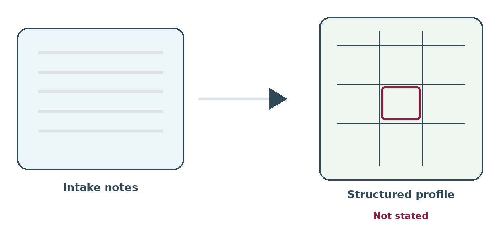

You have thirty minutes of notes. You need a clear, structured job profile. This is a job AI genuinely helps with — and also the step where it most easily invents requirements nobody asked for.
{kind=link}

Why raw notes are not enough
Notes follow the order of the conversation, not the shape of the job. They mix requirements with stories. And they do not separate what the manager said from what you concluded.
That last distinction matters. A requirement you worked out for yourself is one nobody has agreed to.
The prompt that works
Four parts. Change the wording however you like; keep the parts.
- The job. "Pull a structured job profile out of these interview notes."
- The input. Your notes, clearly marked off.
- The fields you want back. Name them. Success in six months, must-haves, learnable skills, what went wrong last time, salary, who decides, what they will trade.
- The rule that matters. "For every field, quote the words from my notes that
support it. If the notes do not cover a field, write
not stated. Do not guess, and do not fill gaps with what is normal for this kind of job."
Why "not stated" is the whole trick
Without that instruction, an AI given thin notes will hand you a complete, professional, believable job profile. That is what it is built to do. The invented parts look exactly like the real parts, and they are usually the most reasonable-sounding bits.
With the instruction, you get a profile with holes in it.
The holes are the useful part. They tell you exactly which questions your meeting failed to answer, and each one takes two lines of email to fix.
Said, worked out, or invented
| Type | Example | What to do |
|---|---|---|
| They said it | "Needs to have run a team of at least four" — the manager's words | Keep it, with the quote attached |
| You worked it out | They described complicated stakeholders; you concluded seniority | Fine, but mark it as yours and confirm it |
| The AI invented it | "Strong communication skills" appears nowhere in your notes | Delete it. It will end up as a screening rule |
General qualities are the most common invented field and the most damaging, because they sound uncontroversial and cannot be checked against a CV. Anything that survives into screening has to be provable from a document. "Strong communicator" is not.
Getting it agreed before you start searching
Send the profile back as one page. Ask for corrections, not approval.
"Approve this" gets you a thumbs up in nine seconds. "Two things I could not find in my notes, and one I may have guessed at — can you confirm?" gets an actual read, because you have given them something specific to do.
Do this before you start searching, not after. A correction on day one costs you a message. The same correction found at shortlist stage costs a week of searching and the manager's confidence.
Download the prompt · all templates
Watch for this
If the profile comes back with no gaps at all, either your meeting was exceptional or the AI quietly filled them in. Check three fields against your notes before trusting it. It takes a minute, and it catches the problem every time it happens.